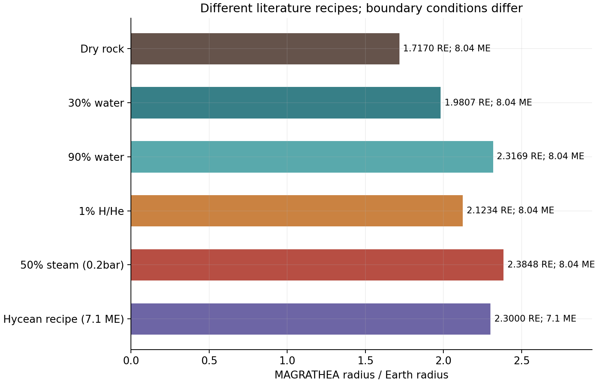
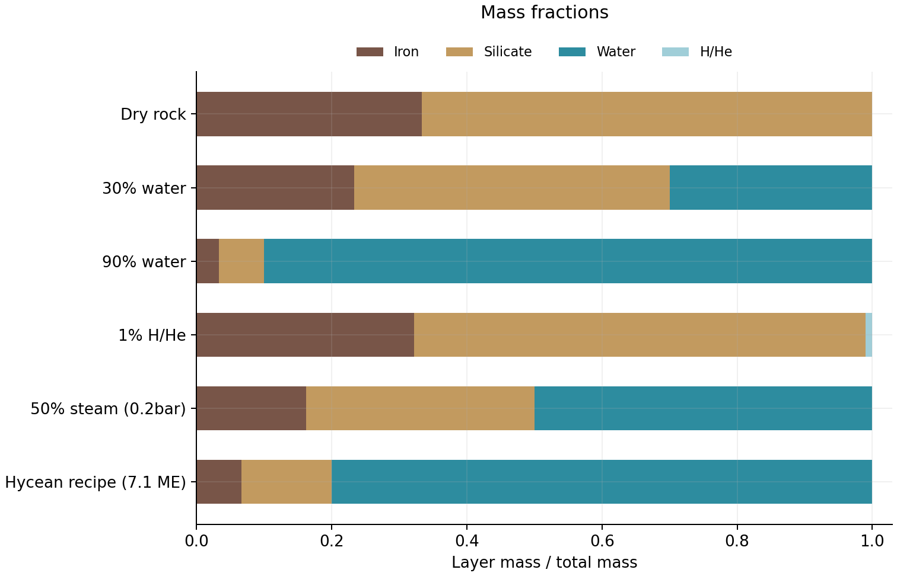
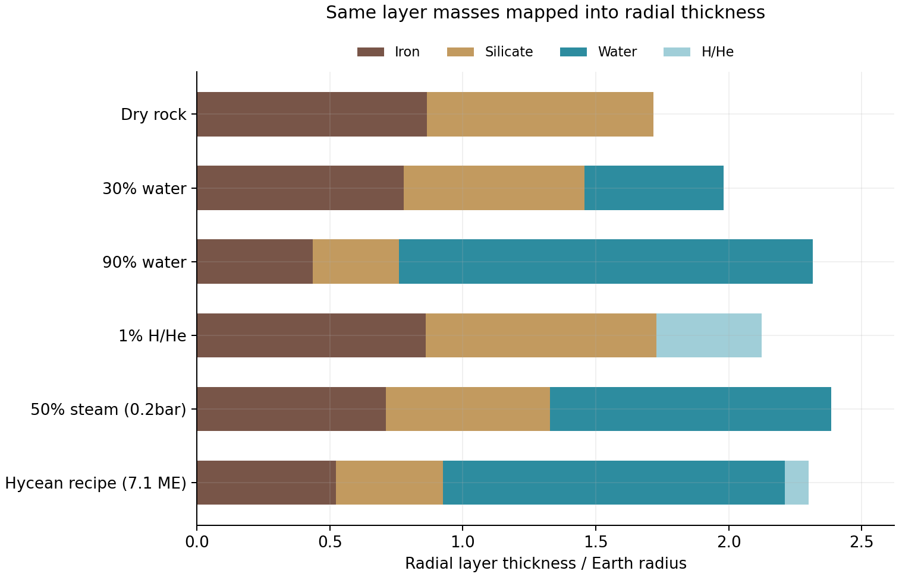
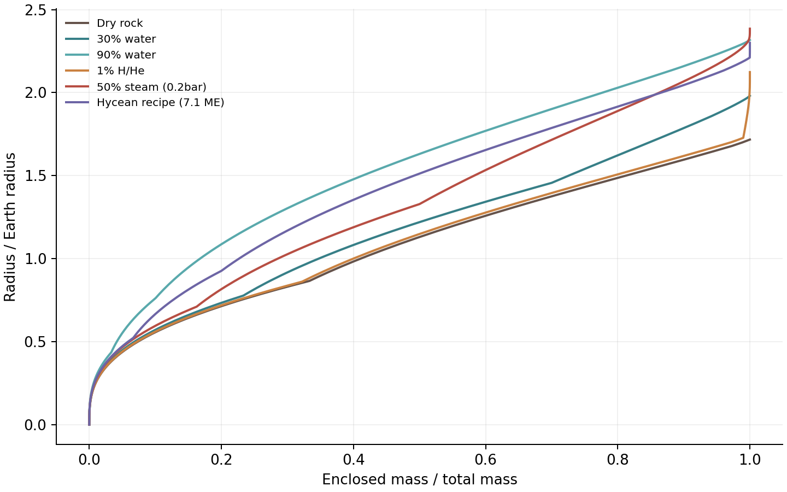
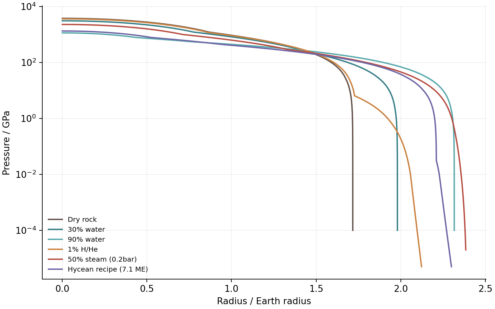
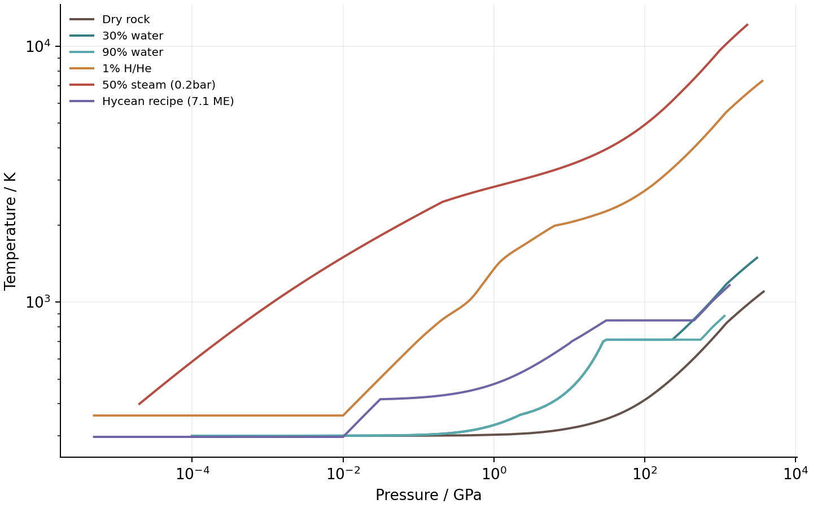
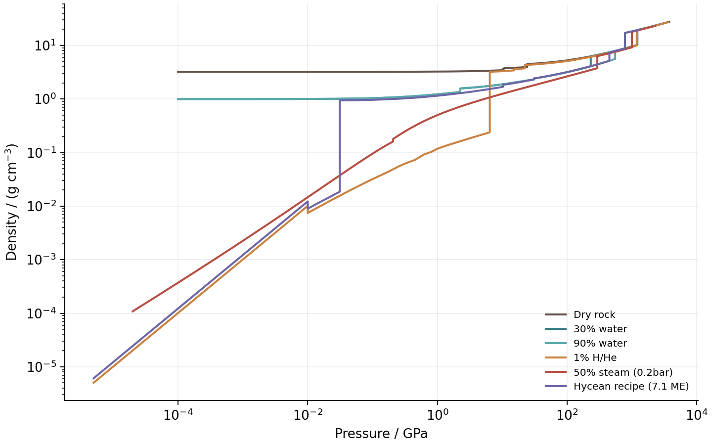
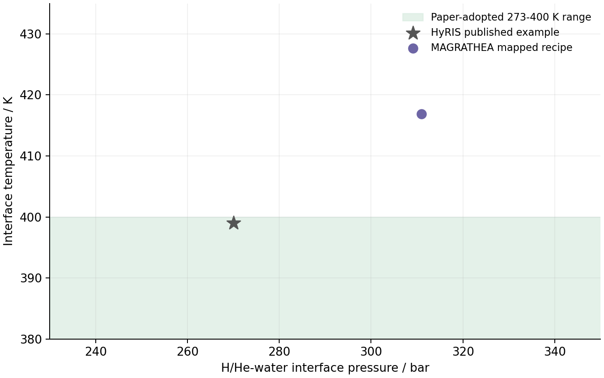
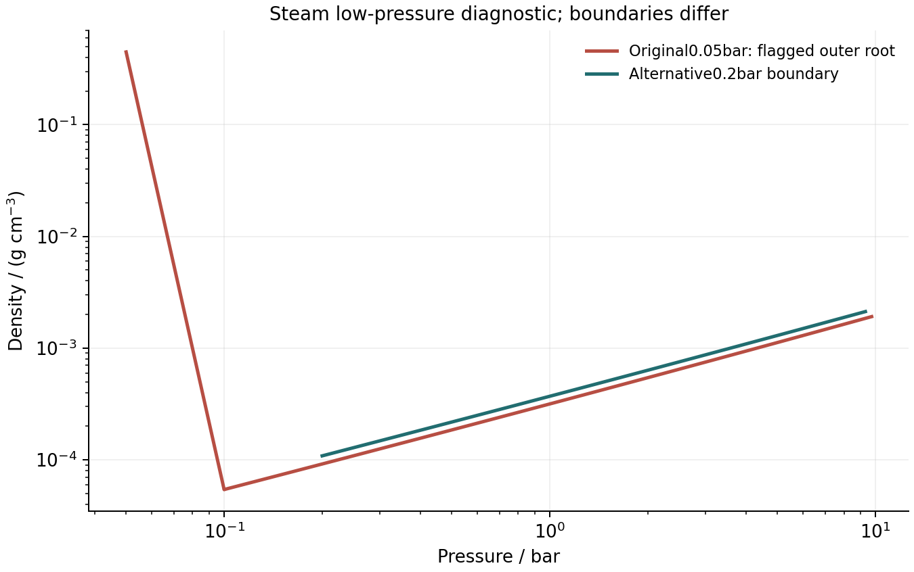

六种构成，跑出来有什么不同？
共完成16次行星计算与一个单点EOS探针。主表展示六种构成及其容限对照；蒸汽采用补做的0.2bar边界，原0.05bar结果因密度分支异常仅作诊断保留。
这些是文献配方在 MAGRATHEA 中的前向计算。蒸汽与气体案例把文献Teq当作T0代理；Hycean案例虽移植具体输入，也没有复现HyRIS的全部物性。不能据此认定哪种结构就是TOI-732 c的真实组成。
01 · 参数从哪来？
Bonfanti等（2024）§5.2、Fig.5提供1%H/He和50:50水岩两类解释；取其8.04M⊕质量，气体案例取T0=360K、P0=0.05bar；蒸汽最初取400K/0.05bar，发现低压分支异常后另做400K/0.2bar对照，主表采用后者。Teq与T0的这一映射是我们的假设，文献的辐射/演化模型没有随之移植。
Rigby & Madhusudhan（2024）§2.4、Fig.5给出30%和90%水的参照配方，300K、1bar；§3.2.3的具体Hycean案例用7.10M⊕、80%水、0.0132%H/He、297K、0.05bar。百分数都是总质量分数，0.0132%=0.000132，不是0.0132。
前三组共用1/3铁、2/3硅酸盐的岩石比例；Bonfanti两组岩石部分用32.5%铁、67.5%硅酸盐。所有界面Tgap=0。水用water_default，含H/He的主案例用HHe_tabulated。全局等温开关仍为false。
English · Source mapping
Recipes and boundary definitions are traced to Bonfanti2024§5.2/Fig.5 and Rigby2024§2.4/§3.2.3. Only the dry,30%water and90%water cases share mass,T0,P0 and rock ratio. Teq-to-T0 mapping in the gas/steam examples is an experimental assumption. The7.10ME Hycean recipe is a separate published example.
02 · 主案例结果
| 配方 | M/M⊕ | 水 | H/He | T0/K | P0/bar | R/R⊕ | 状态 |
|---|---|---|---|---|---|---|---|
| 干燥岩石参照 | 8.04 | 0% | 0% | 300 | 1 | 1.71695 | 0 |
| 30% 水层 | 8.04 | 30% | 0% | 300 | 1 | 1.98068 | 0 |
| 90% 水层 | 8.04 | 90% | 0% | 300 | 1 | 2.31688 | 0 |
| 岩石 + 1% H/He | 8.04 | 0% | 1% | 360 | 0.05 | 2.12339 | 0 |
| 50%水岩蒸汽 · 0.2bar对照 | 8.04 | 50% | 0% | 400 | 0.2 | 2.38480 | 0 |
| Hycean 文献参照 | 7.1 | 80% | 0.0132% | 297 | 0.05 | 2.29998 | 0 |
干燥岩石是参照组。不同模型使用不同热边界，最后一组质量也不同；不能把六组半径差都解释成仅由水或气体比例造成。文献8.04M⊕、2.39R⊕观测值可以作背景参照，但这里没有计算拟合优度、后验或组成约束。



03 · 剖面展示




04 · Hycean配方：为什么没直接得到论文答案？
论文HyRIS示例给出R=2.41R⊕，界面399K/270bar。本次MAGRATHEA得到R=2.29998R⊕，水—气界面约416.86K/310.98bar，水侧模型标签为Water (Bollengier/SF)。
它的界面温度高于论文采用的400K上限，因此不满足那篇论文选定的273–400K条件。液态水模型标签与“符合本文选定条件的Hycean解”是不同判断。此例展示跨代码移植配方后应重新检查边界，而不能只沿用类型名称。

English · Hycean check
The mapped recipe yields2.29998RE and an interface near416.86K/310.98bar, versus the paper example2.41RE,399K/270bar. The code-selected liquid-water boundary exceeds the paper-adopted400K ceiling. This is not a reproduction of the published habitable-range result.
05 · 数值稳定性和气体物性对照
六组均同时把ode_eps_rel1从10⁻¹⁰收紧为10⁻¹¹、fit_eps_rel从10⁻⁴收紧为10⁻⁵。最大半径相对变化为2.668e-06；这是联合细化的敏感性检查，不把变化归因于某一个容限，也不是绝对误差上限。
| 案例 | ΔR/R | ΔPc/Pc | ΔTc/Tc |
|---|---|---|---|
| 干燥岩石参照 | -1.059e-07 | 1.835e-05 | 2.146e-06 |
| 30% 水层 | 7.923e-08 | 1.396e-05 | 8.867e-06 |
| 90% 水层 | 1.311e-06 | -3.514e-08 | 3.434e-06 |
| 岩石 + 1% H/He | 2.668e-06 | 1.029e-05 | 3.819e-05 |
| 50%水岩蒸汽 · 0.2bar对照 | -5.208e-07 | 4.050e-07 | -4.416e-06 |
| Hycean 文献参照 | 2.129e-06 | -6.448e-07 | 6.229e-05 |
1%气层案例若把HHe_tabulated改为gas_default，半径从2.12339变为1.98113R⊕，变化-6.70%。该设置同时改变气体密度与热处理，不能仅归因为密度EOS。这一物理模型差异远大于本轮容限变化。
06 · 警告、检查与边界
蒸汽案例在试探中报告约196.9K的IAPWS表格越界并返回端点密度；最终保存剖面Tmin=400K。主计算和加严对照都保留这一警告。保存点的表格矩形P/T范围检查发现0组越界记录；这不覆盖试探过程、输出筛掉的点或解析EOS的完整有效域。
原0.05bar蒸汽结果不作为可信的构成对照。虽然status0且基本数值检查通过，表面密度却达到0.44762g/cm³。独立EOS探针在同样400K/0.05bar下，以气体初猜得到2.70668×10⁻⁵g/cm³，以未知初猜得到0.44762g/cm³；两个根都满足压强方程。原半径2.41348R⊕被标记异常，未用来讨论组成。
主表展示补跑的0.2bar蒸汽边界：R=2.38480R⊕、表面密度约1.086×10⁻⁴g/cm³，无日志警告。它避开低于0.1bar的vdW模型，但同时改变了物理边界与热路径，不能把半径差归因于单一数值错误。原0.05bar配方仍需正确的相支选择或低压气体模型后才能严谨重算。

进一步尝试只改ave_rho_hydro配置时，发现main.cpp:250在try块中声明了局部ave_rho，遮蔽随后mode0使用的全局变量。因此该次初猜探测实际无效，未计作敏感性证据；源码未修。日志与配置均保留，避免将配置改变误认为模型已改变。
16次运行均记录状态和退出码，保存点通过有限性、正P/ρ/T、质量/半径排序、质量总量及表面边界检查。程序状态0与这些检查支持数值执行成功，原低压蒸汽异常也说明它们不足以验证物理分支；仍不代表完整验证材料物理、辐射热结构或真实行星组成。本次未做MCMC、混合物化学或HPC计算。
English · Numerical limits
All runs returned status0 and passed saved-profile checks. Joint refinement changed radii by at most2.668e-06; this is not a certified error bound. The original0.05bar steam run also selects a dense vdW surface root and is excluded from the composition comparison. The table uses an additional0.2bar boundary scenario, which changes the physical problem. The initial-density config probe was ineffective because of a local/global variable shadow in main.cpp. No source correction was made.
下载与复现
完整配置、日志、剖面和哈希保存在D盘outputs/literature-cases-20261018。原fork科学源码未修改，沿用已验证过的临时状态日志构建。每组配置使用独立输出名，避免追加混合。